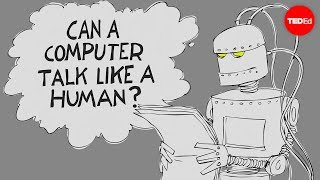

Turing
> "Human languages[+] “a system of symbols and rules for writing instructions for computers” [©: Cambridge Dictionary (2022). University Press] did not make much of a place for themselves in computing during the 1950s. It wasn’t until the early 1960 that word processing began to take shape; in 1963, for instance, an early program for writing[+] “to write a series of instructions that make a computer perform a particular operation” [©: Cambridge Dictionary (2022). University Press] on the computer was developed by hackers at MIT. Although some question-answering systems had been programmed earlier, as Weizenbaum [back - go to eliza] documents in his book, the first more general conversational program[+] “a computer program designed to have a conversation with a human being, especially over the internet” [©: Cambridge Dictionary (2022). University Press] of the sort that Alan Turing [❑]  [❑] Figure 1. The Turing test: Can a computer pass for a human? - Alex Gendler. TED-Ed. YouTube. envisioned (03) was the one Weizenbaum created from 1964 to 1966." [©:1] [©:1] Comptuer Power and Human Reason – Joseph Weizenbaum, 1976.
> "While Turing’s guess that a thinking machine[+] “a piece of equipment with several moving parts that uses power to do a particular type of work” [©: Cambridge Dictionary (2022). University Press] would be around in 2000 may not have been right on target, within more limited contexts, Turing’s prediction that computers would plausibly interact with people using language as an interface [>] was borne out long ago, by Weizenbaum’s work in the 1960s." [©:1] [©:1] Comptuer Power and Human Reason – Joseph Weizenbaum, 1976.